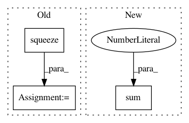

02c704530eab9c8376b029aab4047babda5c65b8,skimage/measure/_moments.py,,moments_contour_central,#Any#Any#Any#,51
Before Change
// for a contour of shape (N, D), the following
// produces an N x D**2 calculation of moments
// for the points, then sums along axis 0
calc = np.einsum(("i...," * ndim)[:-1],
(*
[calc[:, i::ndim].squeeze()
[..., (* ([np.newaxis] * i + [slice(None)]
+ [np.newaxis] * (ndim - i - 1)))]
for i in range(ndim)]))
return calc
After Change
for point in calc:
M += [_expand(point[0], point[1:])]
calc = np.sum(M, axis=0)
return calc
In pattern: SUPERPATTERN
Frequency: 3
Non-data size: 3
Instances
Project Name: scikit-image/scikit-image
Commit Name: 02c704530eab9c8376b029aab4047babda5c65b8
Time: 2017-10-29
Author: contact@kne42.me
File Name: skimage/measure/_moments.py
Class Name:
Method Name: moments_contour_central
Project Name: ixaxaar/pytorch-dnc
Commit Name: a6667bf98c59a7447a6bc55869459e83f5bdb603
Time: 2017-12-07
Author: root@ixaxaar.in
File Name: dnc/sparse_memory.py
Class Name: SparseMemory
Method Name: update_usage
Project Name: pcyin/tranX
Commit Name: 65c51a90b9034c934e4f91d6fe35d6a28c3b2f7e
Time: 2018-10-28
Author: pcyin@cs.cmu.edu
File Name: model/seq2seq.py
Class Name: Seq2SeqModel
Method Name: score_decoding_results